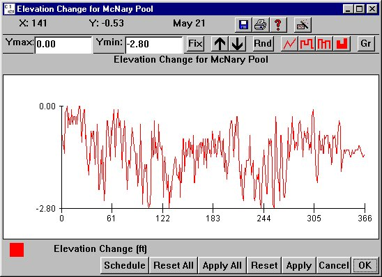

Elevation: Reservoir Elevation
Selecting a Reach from Flow Elevation opens a window for setting the elevation of the selected reach on a daily basis. For storage reservoirs, see Reservoirs. In Scenario Mode, the values set in this window are used to control the reservoir elevation. In Monte Carlo Mode, the reservoir elevation can be input from the Flow Archive File if it contains reservoir elevation, otherwise, it is taken from the specified Yearly Input Data File.
Elevation opens a window for setting the elevation of the selected reach on a daily basis. For storage reservoirs, see Reservoirs. In Scenario Mode, the values set in this window are used to control the reservoir elevation. In Monte Carlo Mode, the reservoir elevation can be input from the Flow Archive File if it contains reservoir elevation, otherwise, it is taken from the specified Yearly Input Data File.
This is an Editable Graph window.
Drawdown Alternatives Information
- In the
columbia.desc file, full pool reservoir elevations are defined using forebay_elevation and tailrace_elevation. Reservoir elevations may be computed from volume and surface area if no other information is present. They may also be input directly as average depth using the depth token.
Note. Additional River Description Files are also available in the COMPASS distribution that simulate drawdown alternatives for the Snake and Columbia rivers. See the River Description File section for more information.
- Elevation changes at full pool are designated zero feet with drawdowns below full pool measured in negative feet.
- Effective predator density can increase as the reservoir elevation (and volume) is lowered. Turning on predator density / volume interaction in RunRuntime Settings causes predator density to increase with elevation lowering. This increase may counteract the benefits of faster migration velocity and may result in no change in smolt survival.

Elevation window for McNary Pool